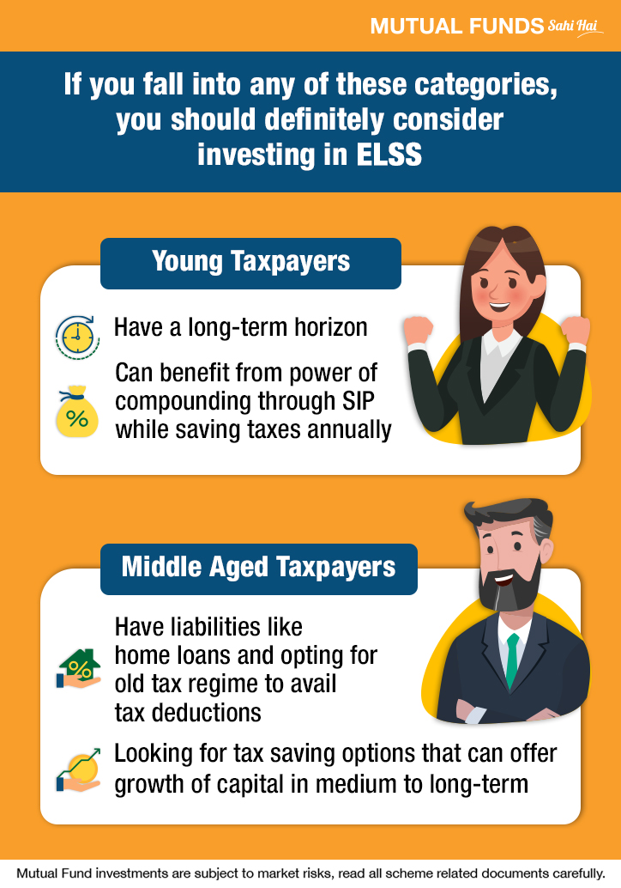

कर बचतासाठी ELSS (Mutual Funds) — कोणांना गुंतवणूक करावी?

Tax-Saving Mutual Funds, ज्यांना Equity-Linked Savings Schemes (ELSS) देखील म्हणतात, हे
विविधीकरण असणारे इक्विटी-फंड्स आहेत जे कर सूटसाठी Section 80C अंतर्गत लाभ देतात मान्य आहेत.
ELSS कोणासाठी योग्य आहेत?
नियमित उत्पन्न असणारे करदाते — जसे की पगारधारक, ज्यांना दरवर्षी कर बचत हेतू गुंतवणूक
करण्याची गरज असते.
तरुण गुंतवणूकदार — दीर्घकालीन वाढ, कर व बचत, ही दोन्ही फायदे घेण्यासाठी आदर्श.
निवृत्तीपूर्वी जवळजवळ 5–7 वर्षे उरलेले गुंतवणूककर्ते — ज्यांना जोखीमाचा प्रमाण थोडा
स्वीकारण्यासारखा वाटतो.
ELSS मध्ये प्रत्येक SIP पेमेंटवर तीच ३-वर्षे लॉक-इन लागू होते—त्या नंतर गुंतवणूक पुढे राखल्यास पुरा लाभ मिळू
शकतो.
लॉक-इन आणि गुंतवणूकाचा काळ
ELSS मध्ये गुंतवणूक करण्यासाठी ३ वर्षांचा ताबडतोब लॉक-इन समय लागू असतो. म्हणजे SIP सुरु केलेल्या प्रत्येक
हफ्त्यावर स्वतंत्र ३ वर्षांची बंदी लागते. तरीही, दीर्घकालीन गुंतवणूक उत्तम फळ देते.
योग्य गुंतणूकदारांकरता फायदे
कर बचत + संपत्ति निर्माण — कर सवलती सोबत इक्विटी मागे ठेवणारी वाढीदेखील.
लहान लॉक-इन कालावधी — PPF व इतरांपेक्षा ELSS ची लॉक-इन 3 वर्षांमध्ये सर्वात कमी आहे.
SIP द्वारे अनुशासन — पगारातून नियमित गुंतवणूक करत राहण्यास मदत.
“ELSS तुम्हाला कर बचत आणि इक्विटीचा दीर्घकालीन फायदा दोन्ही देते — फक्त तुमचा जोखीम स्वीकारण्याची
तयारी पाहिजे.”